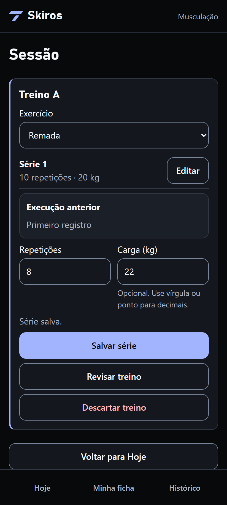
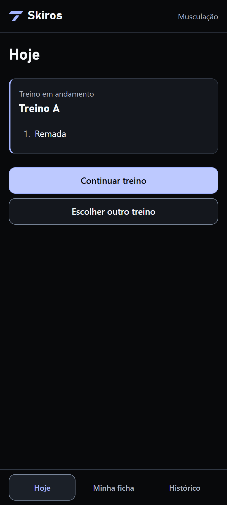

JavaScript · Supabase
Acervo de Livros
Criei uma estante digital para cadastrar livros, guardar notas e acompanhar minhas leituras. É possível buscar por título ou autor e filtrar por etapa da leitura.
Curso o primeiro ano de Desenvolvimento de Sistemas na ETEC Dra. Maria Augusta Saraiva. Desenvolvo projetos para a web, de catálogos de livros a jogos de corrida.
Ver projetosGosto de explorar o que dá para fazer no navegador.
No Acervo, trabalhei com busca, filtros e armazenamento de dados. No TopSpeed, usei o mesmo ambiente para criar uma corrida em 3D. O que me interessa muda de um projeto para outro, mas sempre começo pelo que a pessoa vai poder fazer na tela.
Desenvolvimento de Sistemas
ETEC Dra. Maria Augusta Saraiva · 1º ano
JavaScript · Supabase
Criei uma estante digital para cadastrar livros, guardar notas e acompanhar minhas leituras. É possível buscar por título ou autor e filtrar por etapa da leitura.
Three.js · Web 3D
Desenvolvi um jogo de corrida arcade em 3D para o navegador. Você pode escolher a pista, o carro e a dificuldade dos adversários antes da largada.
PWA · Web mobile
Criei um site instalável para um pet shop fictício. Dá para consultar serviços, experimentar o agendamento pelo celular e acessar o conteúdo offline.
Interfaces do Acervo de Livros e do PetLume.
Armazenamento de livros e notas no Acervo de Livros.
Pistas e carros em 3D no TopSpeed.
Exercícios de lógica e fundamentos de programação.
Instalação no celular e acesso offline no PetLume.
Desenvolvimento do Skiros para web e Android.
A academia faz parte da minha rotina. Entre uma série e outra, eu queria lembrar quanto peso tinha usado na última vez.
Criei o Skiros para anotar as cargas e repetições, retomar uma sessão interrompida e rever os treinos que concluí na semana.
Esse projeto nasceu de uma situação que conheço bem. Uso o que construí no dia a dia para descobrir o que ainda pode ficar mais simples.
Meu aplicativo pessoal de musculação. Posso retomar o treino de onde parei, anotar as repetições e a carga de cada série e consultar as sessões que concluí na semana.



Capturas da versão web com dados de demonstração. Selecione uma imagem para ampliar.